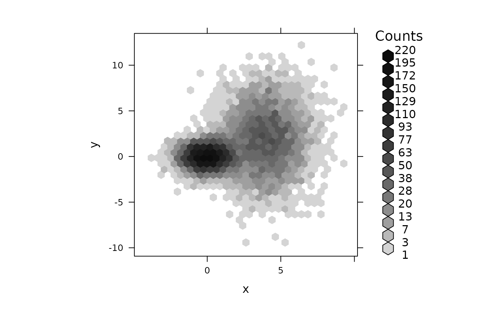
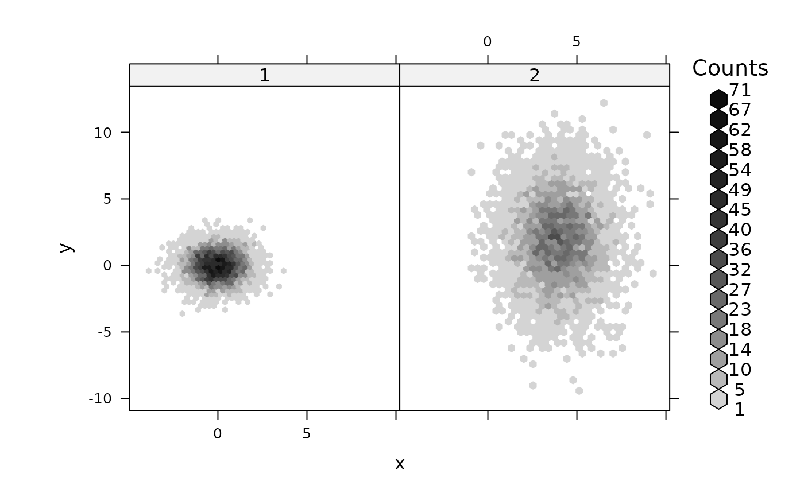
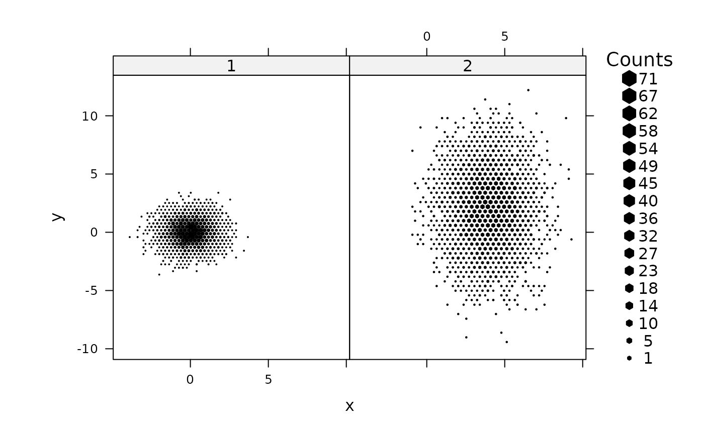
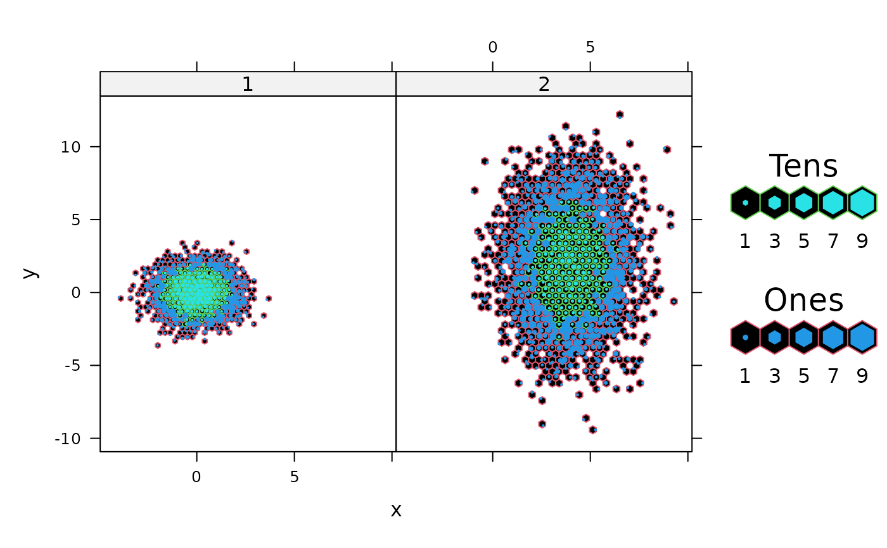
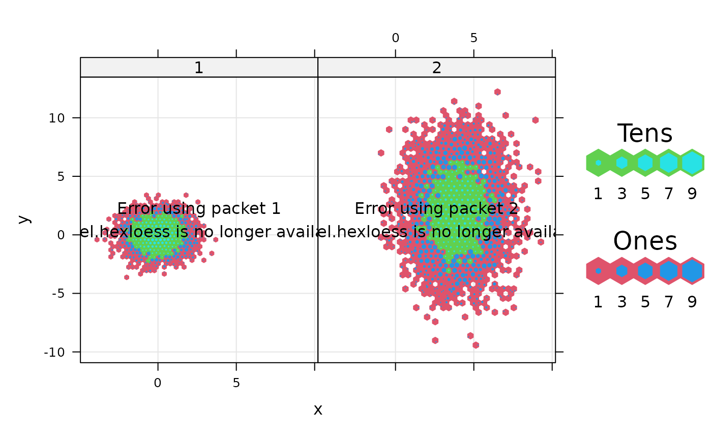

hexbinplot.RdDisplay of hexagonally binned data, as implemented in the
hexbin packge, under the Trellis framework, with associated
utilities. hexbinplot is the high level generic function, with
the "formula" method doing the actual work.
prepanel.hexbinplot and panel.hexbinplot are associated
prepanel and panel functions. hexlegendGrob produces a
suitable legend.
hexbinplot(x, data, ...)
# S3 method for formula
hexbinplot(x, data = NULL,
prepanel = prepanel.hexbinplot,
panel = panel.hexbinplot,
groups = NULL,
aspect = "xy",
trans = NULL,
inv = NULL,
colorkey = TRUE,
...,
maxcnt,
legend = NULL,
legend.width = TRUE,
subset)
prepanel.hexbinplot(x, y, type = character(0), ...)
panel.hexbinplot(x, y, ..., groups = NULL)
hexlegendGrob(legend = 1.2,
inner = legend / 5,
cex.labels = 1,
cex.title = 1.2,
style = "colorscale",
minarea = 0.05, maxarea = 0.8,
mincnt = 1, maxcnt,
trans = NULL, inv = NULL,
colorcut = seq(0, 1, length = 17),
density = NULL, border = NULL, pen = NULL,
colramp = function(n) { LinGray(n,beg = 90,end = 15) },
...,
vp = NULL,
draw = FALSE)For hexbinplot, the object on which method dispatch
is carried out.
For the "formula" methods, a formula describing the form of
conditioning plot. Formulas that are valid for xyplot are
acceptable.
In panel.hexbinplot, the x variable.
In panel.hexbinplot, the y variable.
For the formula method, a data frame containing
values for any variables in the formula, as well as groups
and subset if applicable (using groups currently
causes an error with the default panel function). By default, the
environment where the function was called from is used.
see
gplot.hexbin
See
xyplot. aspect="fill" is not
allowed. The current default of "xy" may not always be the
best choice, often aspect=1 will be more reasonable.
logical, whether a legend should be drawn. Currently a legend can be drawn only on the right.
width of the legend in inches when
style is "nested.lattice" or
"nested.centroids". The name legend.width is used to
avoid conflict with the standard trellis argument legend. It
is possible to specify additional legends using the legend or
key arguments as long as they do not conflict with the
hexbin legend (i.e., are not on the right).
Inner radius in inches of hexagons in the legend when
style is "nested.lattice" or
"nested.centroids".
in the legend, multiplier for numeric labels and text annotation respectively
character vector controlling additional augmentation of
the display. A "g" in type adds a reference grid,
"r" adds a regression line (y on x), "smooth" adds a
loess smooth
logical, whether to draw the legend grob. Useful when
hexlegendGrob is used separately
grid viewport to draw the legend in
extra arguments, passed on as appropriate. Arguments to
gplot.hexbin,
xyplot, panel.hexbinplot and
hexlegendGrob can be supplied to the high level
hexbinplot call.
panel.hexbinplot calls one of two (unexported) low-level
functions depending on whether groups is supplied (although
specifying groups currently leads to an error). Arguments of
the appropriate function can be supplied; some important ones are
xbins:number of hexagons covering x values. The
number of y-bins depends on this, the aspect ratio, and
xbnds and ybnds
xbnds, ybnds:Numeric vector specifying range of
values that should be covered by the binning. In a multi-panel
display, it is not necessarily a good idea to use the same
bounds (which along with xbins and the aspect ratio
determine the size of the hexagons) for all panels. For
example, when data is concentrated in small subregions of
different panels, more detail will be shown by using smaller
hexagons covering those regions. To control this, xbnds
and ybnds can also be character strings "panel" or
"data" (which are not very good names and may be changed
in future). In the first case, the bounds are taken to be the
limits of the panel, in the second case, the limits of the data
(packet) in that panel. Note that all panels will have the same
limits (enough to cover all the data) by default if
relation="free" in the standard trellis argument
scales, but not otherwise.
in hexbinplot, a grouping variable that is
evaluated in data, and passed on to the panel function.
an expression that is evaluated in evaluated in
data to produce a logical vector that is used to subset the
data before being used in the plot.
The panel function panel.hexbinplot creates a hexbin object
from data supplied to it and plots it using
grid.hexagons. To make panels
comparable, all panels have the same maxcnt value, by default
the maximum count over all panels. This default value can be
calculated only if the aspect ratio is known, and so
aspect="fill" is not allowed. The default choice of aspect
ratio is different from the choice in hexbin (namely,
1), which may sometimes give better results for multi-panel
displays. xbnds and ybnds can be numeric range vectors
as in hexbin, but they can also be character strings specifying
whether all panels should have the same bins. If they are not, then
bins in different panels could be of different sizes, in which case
style="lattice" and style="centroids" should be
interpreted carefully.
The dimensions of the legend and the size of the hexagons therein are
given in absolute units (inches) by legend.width and
inner only when style is "nested.lattice" or
"nested.centroids". For other styles, the dimensions of the
legend are determined relative to the plot. Specifically, the height
of the legend is the same as the height of the plot (the panel and
strip regions combined), and the width is the minimum required to fit
the legend in the display. This is different in some ways from the
hexbin implementation. In particular, the size of the hexagons
in the legend are completely unrelated to the sizes in the panels,
which is pretty much unavoidable because the sizes need not be the
same across panels if xbnds or ybnds is "data".
The size of the hexagons encode information when style is
"lattice" or "centroids", consequently a warning is
issued when a legend is drawn with wither of these styles.
hexbinplot produces an object of class "trellis". The
update method can be used to update components of the object and
the print method (usually called by default) will plot it on an
appropriate plotting device. hexlegendGrob produces a
"grob" (grid object).
mixdata <-
data.frame(x = c(rnorm(5000),rnorm(5000,4,1.5)),
y = c(rnorm(5000),rnorm(5000,2,3)),
a = gl(2, 5000))
hexbinplot(y ~ x, mixdata, aspect = 1,
trans = sqrt, inv = function(x) x^2)

hexbinplot(y ~ x | a, mixdata)

hexbinplot(y ~ x | a, mixdata, style = "lattice",
xbnds = "data", ybnds = "data")
#> Warning: legend shows relative sizes

hexbinplot(y ~ x | a, mixdata, style = "nested.centroids")

hexbinplot(y ~ x | a, mixdata, style = "nested.centroids",
border = FALSE, type = c("g", "smooth"))
